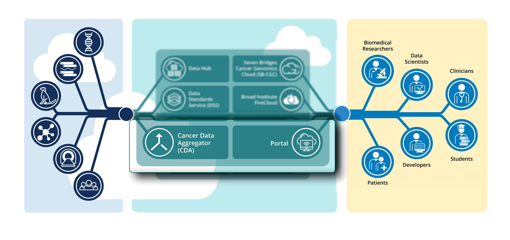

  {% extends "main.html" %}
  {% block tabs %}
    {{ super() }}
    <style>

      /* Hide table of contents */
      @media screen and (min-width: 60em) {
        .md-sidebar--secondary {
          display: none;
        }
      }
  
      /* Hide navigation */
      @media screen and (min-width: 76.25em) {
        .md-sidebar--primary {
          display: none;
        }
        #container {
          display: grid;
          grid-template-columns: fit-content(1000px) 1fr;
          grid-gap: 5px;
          box-sizing: border-box;
          height: 100%;
          width: 100%;
          padding: 10px;
        }

        #container > div {
          background-color: --md-primary-bg-color;
          padding: 5px;
        }
        .left {
          left: 10px;
        }
    </style>
    <div class="homepage">
    <h2>A tool to search across National Cancer Institute datasets</h2>
                <h3>{{ config.site_description }}. </h3>


    <div id="container">
      <div>
        
   <figure>
    
    <figcaption>Dr. Arthur Brady<p>Data wrangling & Developer</figcaption>
    </figure>
      
      </div>
      <div>
        
      </div>
      </div>

      <div class="left">
        <div class="md-grid md-typeset">
      
  <a href="{{ page.next_page.url | url }}" title="{{ page.next_page.title | e }}" class="md-button md-button--primary">
                  Get Started! </a>
              </div></div>
            </div>
  {% endblock %}
  {% block content %}{% endblock %}
  {% block footer %}{% endblock %}